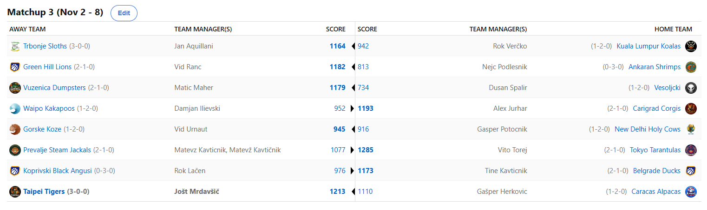
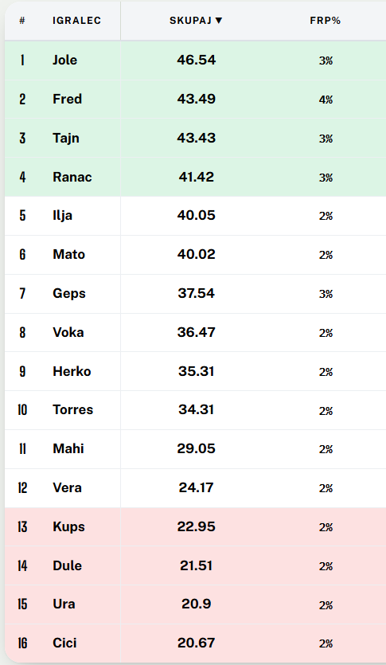
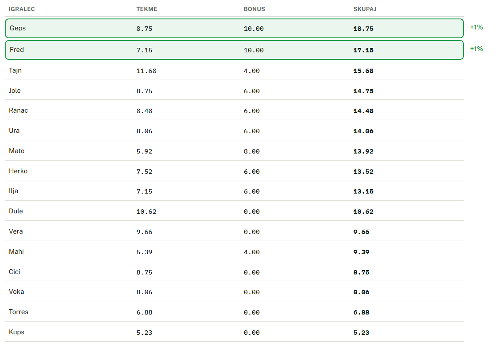
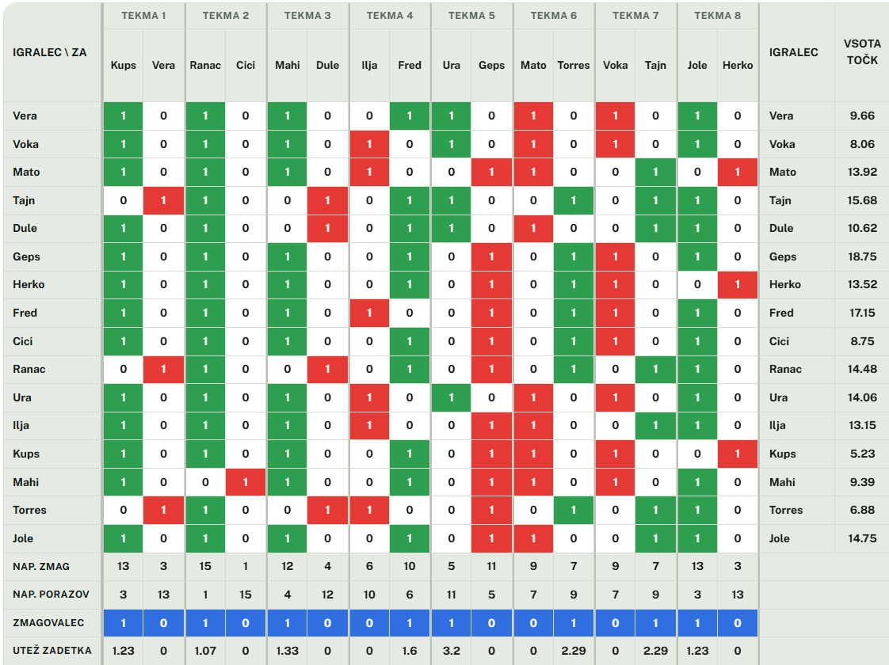
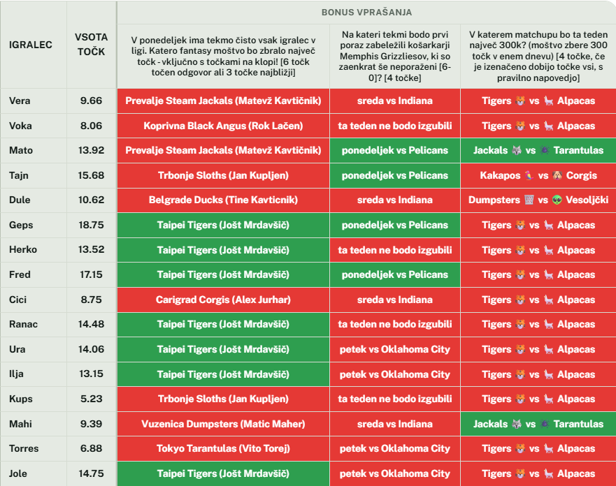

MATCHUP 3

Recap: MATCHUP 3
Čuden razpored v tretjem tednu je botroval k varčevalnim ukrepom celotne lige, saj je z zgolj 89 porabljenimi $ to drugo najmanj
zapravljiv teden v zgodovini lige. Zatišje pred black fridayjem očitno. Lestvica lige je še naprej v popolni simetriji, zdaj so
se formirale 4 skupine in sicer po vzorcu 2-6-6-2. Kot bi se nekako že izrisale skupine za BYE, GAJBO in PLAY-IN. Ima še kdo
kakšen protest glede svoje trenutne skupine?
Vsekakor nima nič proti Jole. Še iz lanske sezone so Tigersi prenesli brutalno formo in tole je že 15. zaporedna zmaga, kar je nov rekord lige.
Videli bomo, do katere številke jim uspe tole še izboljšati, zanima pa nas predvsem kdo jih lahko zaustavi. Upe je širše ljudstvo polagalo v
izkušenega Herkoviča, ki pa žal ni našel prave forme in že ponedeljkov švas-night je prinesel preveliko rezultatsko luknjo in Gašper je bil prisiljen priznati
premoč močnejšemu tekmecu. Čeprav je v preteklih dveh krogih imel 4. in 8. score, pa je zabeležil 2 zaporedna poraza, ampak tolaži ga lahko tisti
klišejski »slab začetek, dober konec« in vsekakor ostaja v igri da brani 2. mesto iz lanske sezone. Če se lahko po zaostanku 2x vrne Manchester United,
potem se gotovo lahko vrnejo tudi Alpake. Čeprav si Gašper s svojo kvizaško ekipo, ki med drugim zajema še 3 člane naše lige, ni uspel priigrati vikenda
na Plitvičkih jezerih, pa je tudi 5. mesto zelo soliden uspeh!
Izjemen začetek je uspel tudi Kupsu in njegovim Slothsom. Vsekakor mu je zaenkrat naklonjena sreča, v zadnjih dveh krogih je namreč zabeležil 2 zmagi,
navkljub zgolj 12. in 7. scoru tedna. Ampak dobro, mu vsaj ni bila naklonjena sreča, ko je izbiral svoj najljubši nogometni klub, tako da se pokrajša.
Kakorkoli, Lenivci harajo in so še neporaženi na 2. mestu. Tokrat mu niso bili kos nasprotniki iz Kuala Lumpurja. Najbrž prvi Malezijci, ki so našli v
Trbonje, so se od tam vrnili praznih rok. Ni še razloga za paniko pri Roku, če bo forma njegove fantasy ekipe podobna formi Joeyja Trivianija na kvizih,
potem bodo Koale definitivno dale gas v drugi tretjini. Do takrat pa čiz na Lukovici in chill.
AJETOJA STA OBA V ZGORNJI POLOVICI LESTVICE. Ne, to ni naslov knjige na sekciji znanstvene fantastike v kakšni knjižnici, pač pa realno stanje po treh
krogih. Kako je do tega prišlo, ne ve nihče, a draft-day facetime je očitno obrodil sadove in tako Levi kot Račke letos izgleda ciljajo visoko. Toda kdor
visoko leta, nizko pade in dokler ne pokažeta še kontinuitete, mislimo da razloga za strah pred tema franšizama ni. Sploh če pogledamo, koga sta v tem
tednu morala premagati za svojo drugo zmago sezone – Tine je ugnal Lačna, Ranc pa v odbojkarskem duelu Cickona. Se pravi vrhovna avspuharja dosedanjega
dela sezone. Tine je svojemu četrtkovemu picknroll partnerju prizadejal še 3. zaporedni poraz in videli bomo, kako bo to vplivalo na že zdaj ne preveč dobro
kemijo v ekipi. Kakopak, ko si v procesu zapravljanja vodstva s 3-1 pač mora biti vzdušje na psu. Angusom nekatere analitične strani pripisujejo zgolj še
24% možnosti za uvrstitev v playoff, kar je glede na mladost sezone vsekakor nekoliko pretirano. Ob vsej kuharski opremi, ki jo mora pripeljati na piknik,
bi si vsekakor želeli, da mu ne bi bilo treba prinesti še gajbe. Očitno pa All-StaračkiDom ekipca, ki letos predstavlja Ankaran, ni bila dobra odločitev.
Cicko se namreč nahaja na povsem zadnjem mestu, brez zmage, planov in upanja. Za tolažbo mu gredo od rok vsaj predictioni … oh wait, tudi tam je zadnji,
nevermind. Bo to dvojna »krona« za Nejca ali pa lahko s svojimi impulzivnimi in agresivnimi trejd manevri še obrne krivuljo rezultatov navzgor?
734. Točk. Špalir. Vesoljčki. Ojoj. Ne sekira se Dule preveč, kajti poškodbe so naredile svoje in konec koncev je čisto vseeno, ali izgubiš za 1 ali pa za
445. Prav toliko je bil namreč boljši Maher in ne moremo, da se ne bi spomnili tistega ikoničnega obračuna v FIFI pred nekaj leti, ko je bila razlika kar
nekako ekvivalentna tejle zdaj. Smo spečega zmaja Matica vendarle prebudili z neskončnimi flejmi na račun njegovega H2H recorda z Gepsom? Bodo Dumpstersi
začeli bruhati ogenj? Vsekakor jim gre bolje od Klovnov na kateri koli točki v zgodovini lol.
Po pričakovanjih pa smo najtesnejši obračun spremljali v t.i. Prežvekovalskem derbiju, ko so se na visokogorskih pašnikih udarile Koze in Svete Krave. Zmago
so tokrat domov na Uršljo odnesle Koze, ki so komajda uspele zadržati lepo prednost na nedeljskem programu. Poleg dejstva, da prihajajo iz Indije, se morajo
tako Krave soočati še s tem problemom, da niti med pašnimi živali več nimajo primata. Bo tudi G€P$, znani zapravljivec na tržnici, posegel po kakšnih
drastičnih ukrepih? Lepo rojstnodnevno darilo za Vida in ker je vsak izgovor dober in vemo kako rad ima Urnaut viljamovko, bo ta teden namesto rojstnodnevne
padla ena zmagovalca. Pri malci kakopak.
Ostal nam je le še veliki derbi 3. kroga, ko sta se v high-scoring matchupu udarila Kavt in Vito. Boljši je bil slednji in tako svojega nasprotnika tudi
prehitel na lestvici, kjer se zdaj nahaja na 3. mestu. Šakali so tako vsaj začasno utišani, kar se pozna predvsem pri kvaliteti contenta v messenger skupini
lige. Upajmo, da to ni začetek konca, pač pa zgolj korak nazaj, pred tremi koraki naprej. Vito bo poskušal dobro formo prenesti v 4. teden, ko nosi na
plečih upanja širše javnosti, da bo prav on tisti, ki Joletu prekine zmagoviti niz 15. zmag. Mu bo uspelo?
Izčrpno poročilo tako končujemo z najavo novega kroga – vsekakor nas bo najbolj zanimal obračun prve in druge goflje lige, udarila se bosta namreč
SuperSvaljko Alex in pa priznani serviser Heineken aparatov Matevž. Šrimpi bodo iskali prvo zmago sezone pri Kakapojih, Angusi pa pri svojih boljših polovicah,
Kravah. Naziv derbija kola pa seveda pripada obračunu med Tigri in Tarantelami, saj sta to tako po powerrankingih kot tudi po season-long predictionih sodeč
to moštvi, ki kotirata le najvišje.
Srečno vsem in ne pozabite na predictione za 4. krog, ki jih najdete tukaj:
https://k1ngmrd4.github.io/NBAFK/predictions/index.html
Pozdrav, J
Predictions
Lestvica

Točke v krogu

Matchups

Bonusi
